User Guide
Usage (Windows)
General Usage
Start the ComVisu software:
others/ComVisu/ComvisuV180Win64.exe
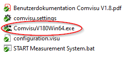
Switch to run tab and connect the interface
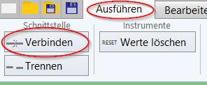
Move to main sheet:
Startseite
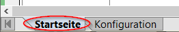
Run the batchfile to start the measurement system:
others/ComVisu/START Measurement System.bat
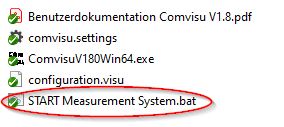
Enter password for the Raspberry Pi and press enter
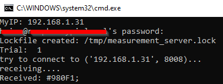Check the keep-alive indicator in the ComVisu GUI. If it is repeatedly flashing green, the connection is established.
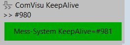Ensure a USB drive is connected to the Raspberry Pi.
Start the measurement system by prinning
Mess-System: START
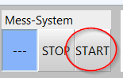
Perform the tests on the measurement system
Once the tests are finished, press
Mess-System: STOP. Data will be saved on the USB drive.
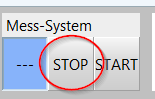
Stop the measuremen system by pressing
CTRL+Cin the terminal.
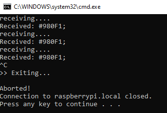
Channel Configuration
Modify Channel Configuration
Repeat steps 1-6 from the General Usage section.
Move to main sheet:
Konfiguration
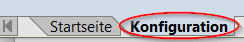
Select the channel you want to configure
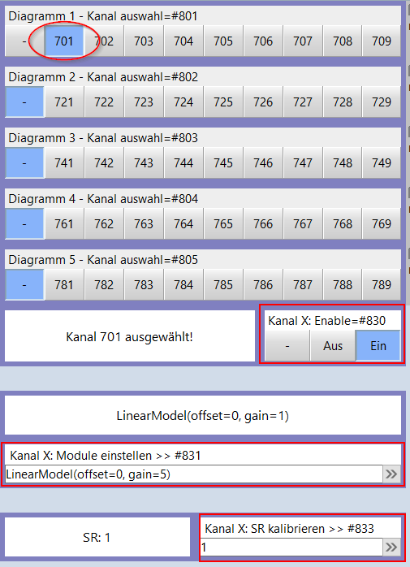
Modify the channel settings (ON/OFF, model selection, or sample rate). After making a change, the channel will be deselected. Only one parameter can be adjusted at a time; reselect the channel to alter another parameter.
Models
The following models are available:
LinearModel: A model for a linear expression.NTCModel: A model for a NTC thermistor.PTxModel: A model for a PT100 or PT1000 or similar platinum resistance temperature sensor (PTx).KTYxModel: A model for a KTY81-110 or similar silicon temperature sensor.StackedModel: It allows stacking multiple models in a specific order, where the output of each model is passed as input to the next.
References
- class LinearModel(offset: float, gain: float)[source]
Bases:
ModelA model for a linear expression. output = input * gain + offset
- Parameters:
offset (float) – The offset of the linear model.
gain (float) – The gain of the linear model.
- Returns:
A new LinearModel instance.
- Return type:
- class NTCModel(r0: float, beta: float, t0: float = 25)[source]
Bases:
ModelA model for an NTC thermistor. The model describes the mathematical relationship between the resistance and temperature.
- Parameters:
r0 (float) – The nominal resistance of the NTC thermistor at the reference temperature T0.
beta (float) – The beta value of the NTC thermistor.
t0 – The reference temperature in Celsius. Defaults to 25 degrees Celsius.
- Returns:
A new NTCModel instance.
- Return type:
- apply(resistance: float) float[source]
Apply the NTCModel to a given resistance value.
- Parameters:
resistance (float) – The resistance value to apply the NTCModel to.
- Returns:
The temperature in Celsius.
- Return type:
float
Note
The temperature is calculated using the formula T = 1 / (1 / T0 + 1 / beta * ln(R/R0)) where T0 is the reference temperature in Kelvin, beta is the beta value of the NTC thermistor, R is the given resistance value, and R0 is the nominal resistance of the NTC thermistor at the reference temperature. The result is converted from Kelvin to Celsius before being returned.
- class PTxModel(r0: float)[source]
Bases:
ModelA model for a PT100 or PT1000 or similar platinum resistance temperature sensor (PTx). The model describes the mathematical relationship between the resistance and temperature.
- Parameters:
r0 (float) – The nominal resistance of the PTx thermistor at the reference temperature.
- Returns:
A new PTxModel instance.
- Return type:
- apply(resistance: float) float[source]
Apply the PTxModel to a given resistance value.
- Parameters:
resistance (float) – The resistance value to apply the PTxModel to.
- Returns:
The temperature in Celsius.
- Return type:
float
Note
The temperature is calculated using the formula T = (R - R0) / (R0 * alpha) where R is the given resistance value, R0 is the nominal resistance of the PTx thermistor at the reference temperature, and alpha is the temperature coefficient of the PTx thermistor.
- class KTYxModel(r0: float, alpha: float = 7.88e-3, beta: float = 1.937e-5, t0: float = 25.0)[source]
Bases:
ModelA model for a KTY81-110 or similar silicon temperature sensor. The model describes the mathematical relationship between the sensor’s resistance and temperature.
- Parameters:
r0 (float) – The nominal resistance of the KTYx thermistor at the reference temperature T0.
alpha (float) – The temperature coefficient of the KTYx thermistor. Defaults to 7.88e-3.
beta (float) – The non-linear coefficient of the KTYx thermistor. Defaults to 1.937e-5.
t0 – The reference temperature in Celsius. Defaults to 25 degrees Celsius.
- Returns:
A new KTYxModel instance.
- Return type:
- apply(resistance: float) float[source]
Apply the KTYxModel to a given resistance value.
- Parameters:
resistance (float) – The resistance value to apply the KTYxModel to.
- Returns:
The temperature in Celsius.
- Return type:
float
Note
Calculation Info: https://docs.rs-online.com/2611/0900766b800910a6.pdf
- class StackedModel(models: List[Model])[source]
Bases:
ModelA Model that consists of multiple sub-models stacked together.
The StackedModel class is a type of Model that combines multiple sub-models to produce a final output. It provides a way to create complex models by stacking simpler models together.
The order of the models in the list is important. The first defined model is the first to be applied to the input value.
- Parameters:
models (List[Model]) – A list of Model instances.
- Returns:
A new StackedModel instance.
- Return type:
Example:
from MeasurementSystem.core.driver.Hardware import Channel from MeasurementSystem.core.driver.Hardware import StackedModel from MeasurementSystem.core.driver.Hardware import LinearModel channel = Channel("test", value=300, model=LinearModel(offset=0, gain=1)) channel.set_model_from_str("StackedModel([LinearModel(offset=100, gain=1), LinearModel(offset=0, gain=10)])")
- apply(value: float) float[source]
Apply the stacked models to a value in order of the models in the list. The result of each model is passed as the input to the next model in the stack.
- Parameters:
value (float) – The value to apply the stacked models to.
- Returns:
The result of applying the stacked models to the given value.
- Return type:
float
Sample Rate
Sample rate in Hz or samples per second.
A value of <= 0 will lead to full system speed. This is not recommended as it will lead also to a high CPU load and/or overflows and data loss. Also a communication overflows can happen, which may lead to a system crash.
Note: The maximum value has to be evaluated, especially with a high number of channels enabled. Not done yet.
Configuration Files
The configuration files are located in the src/MeasurementSystem/config directory.
Important: Changes in channel configurations will be applied immediately, but the file is not saved without manual intervention.
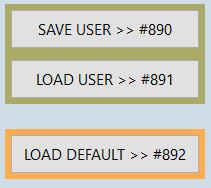Save/Load User: Save or load the current configuration to/from a file. Files saved as
*_user.json.Load Default: Load the pre-configured default configuration from a file. Files saved as
*_default.json.
Configuration files are stored in three diffrent levels: hardware, channel and module
hardware: Contains the configuration for the hardware.
channel: Contains the configuration for channels and its parent hardware.
module: Contains the configuration for modules, its parent hardware and its channels.
Troubleshooting
Software
On any issue, always check command line logs either in ComVisu GUI or in the Terminal where the batch file was started.
Measurement System Lockfile
The measurement system uses a lockfile to prevent double execution. This could happen if the system is started twice or the system is not stopped correctly.
The lockfile is located in /tmp/MeasurementSystem.lock.
When the lockfile is present and the system is started, the active process will be killed and the lockfile will be removed. The system is then ready for a new attempt. This also happens on reboot.